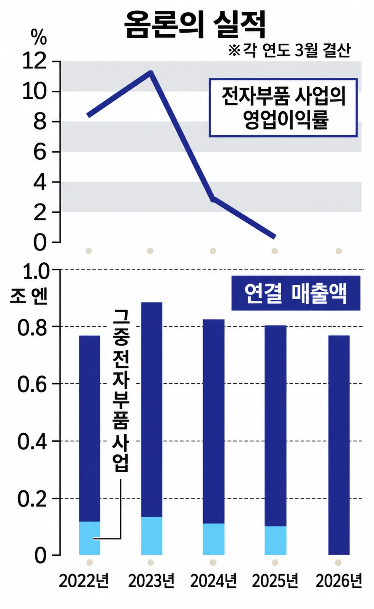
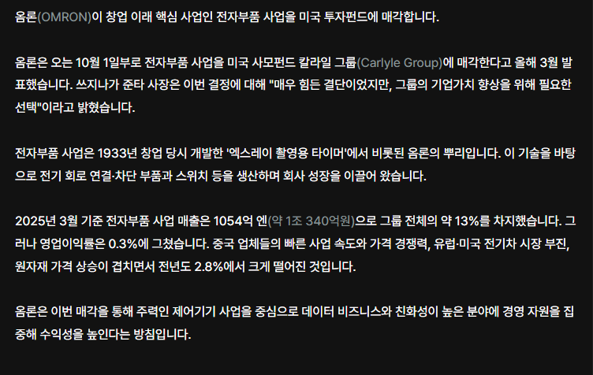
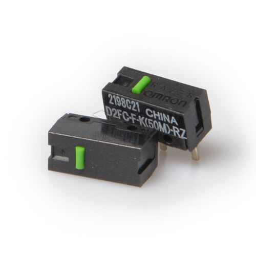
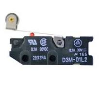

옴론 하니까 모르는 개붕이들 있을건데

ㅇㅇ 그 마우스 스위치에 옴론차이나(옴차) 할때 그 음론 맞음

이런 마이크로 스위치나 조이스틱 에도 많이 들어갔는데, 아예 전자부품 사업부 정리해서 사모펀드에 넘겨버림
일제 옴론스위치는 아직도 명품소리듣는데 아쉽게됬음
한줄요약 : 격겜 조이스틱 쓰는 개붕이들 이제 옴론스위치 옛날버전 잘챙겨둬라 사모펀드가 먹었다? 원가절감임
로지텍의 더블클릭 이슈도 옴론 스위치가 메덴재팬에서 메덴차이나로 바뀌면서 생겼다는 말도 있었지요.
그게 이젠 사모펀드로 가나보군요...